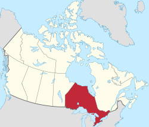

TRAVEL: ONTARIO

Located here.
Our assignment was to pick a location that we wanted to travel to, and make a website about that. I chose Ontario for a number of reasons:
- I've been there before, and my personal experience allowed me to fill out the webpage faster than I would if I picked somewhere I never had been to before - say, Rome - and had to do some research.
- As it was a region instead of a single city, it offered a number of subjects that I could use to flesh out the page, and, thus, allow me to show off more of my coding.
- I actually did have plans to fly out to Ontario some time in Autumn, 2020. Things changed.
Coding elements used for this include:
- HTML
- CSS
KAKAPO
Located here.
This wasn't a class project: I just wanted to link to something else, and wanted a picture of a kakapo on this website as they're one of my favorite animals. Sometimes it just be like that.
Coding elements used for this include:
After getting laid off due to current events, I realized that I needed to do something drastic, something that could change my life for the better. Otherwise I'd be unemployed until spring. So I decided to try coding.